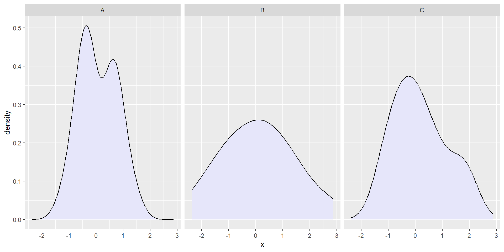
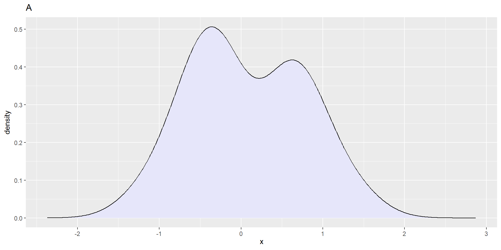
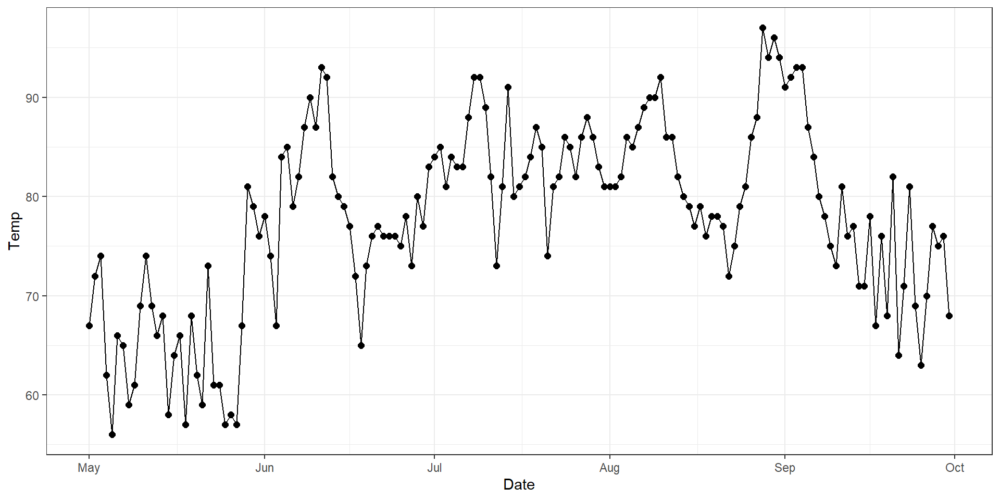
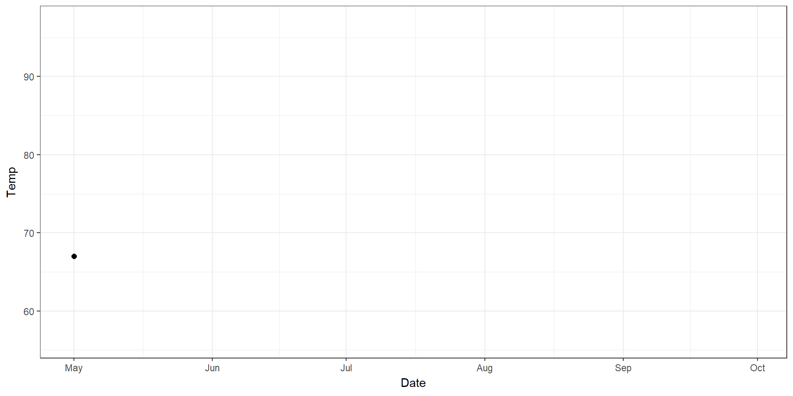

Lecture 19: Animation
Brian J. Smith
2026-04-21
Animation
Animation
- Why animate?
- Why not animate?
- What is an animation?
- Animation with
gganimate - Custom animation with
ImageMagick
Why not animate?
- “Eyes beat memory.”
- Not available in print (obviously) or print-like media (e.g., PDF).
- Resource intensive.
- Interpolation between discrete states may be misleading.
- Interpolated states aren’t data.
Why animate?
- Show different subsets of data.
- Show dynamics (usually over time, but other dimensions possible).
- Guide the eye to subtle changes.
- Build up a figure gradually.
What is an animation?
- Set of frames that are displayed in sequence.
- Each frame is a static image.
- Interpolation between static states can be useful for guiding the eye.
- Animation formats vary in their efficiency.
- Some store 100% of the pixels of each frame.
- High image quality, very large file size.
- Others only store the changes from one frame to the next.
- Significantly reduces file size.
- Can introduce visual artifacts.
- Some store 100% of the pixels of each frame.
- Both image formats and video formats exist.
- E.g., GIF is an image format.
- E.g., MP4 is a video format.
gganimate
gganimate
- R package extending
ggplot2for animation.

gganimate README Animationgganimate
- The
gganimatehelp files organize functions into these grammar classes:- Transitions
transition_*()defines how the items change.
- Views
view_*()defines how the view changes.
- Shadows
shadow_*()defines how items out-of-focus should appear.
- Tweening
enter_*()/exit_*()defines how items come and go.ease_aes()defines how different aesthetics should be eased during transitions.
- Transitions
Transitions
transition_states()- Transition between several distinct stages of the data
transition_time()- Transition through distinct states in time
transition_reveal()- Reveal data along a given dimension
transition_events()- Transition individual events in and out
transition_filter()- Transition between different filters
transition_layers()- Build up a plot, layer by layer (literally the
ggplot2layers)
- Build up a plot, layer by layer (literally the
transition_components()- Define when each independent component enters and exits.
Transitions
transition_states()- Used to transition using discrete variables (i.e., factors).
- Think of this as an alternative to
facet_wrap().- E.g., we made this figure in Lecture 12

Transitions
transition_states()- Animate rather than facet:

Transitions
transition_time()- Used to transition using continuous variables (e.g., time).
- An alternative to showing a classic timeseries.

Transitions
transition_time()- (Time shown redundantly with x-position)

Transitions
transition_reveal()- Used to gradually reveal along a dimension.
Transitions
transition_events()- Gives you detailed control over when items enter and exit.
- Let’s animate the Billboard Top 100 artists.
no title artist year
1 1 Theme from A Summer Place Percy Faith 1960
2 2 He'll Have to Go Jim Reeves 1960
3 3 Cathy's Clown The Everly Brothers 1960
4 4 Running Bear Johnny Preston 1960
5 5 Teen Angel Mark Dinning 1960
6 6 I'm Sorry Brenda Lee 1960Transitions
transition_events()- Gives you detailed control over when items enter and exit.
- Some data wrangling:
# Find those artists with at least 10 appearances
multi <- wiki_hot_100s %>%
count(artist) %>%
filter(n > 10)
# Subset data to just those
tens <- wiki_hot_100s %>%
filter(artist %in% multi$artist)
# Sort by earliest appearance
sorted <- tens %>%
group_by(artist) %>%
summarize(start = min(year)) %>%
arrange(start) %>%
# Pull vector of artist names
pull(artist)
# Change artist to factor by date
tens <- tens %>%
mutate(artist = factor(artist, levels = sorted)) %>%
# Categorize number of song
mutate(no_cat = case_when(
no == 1 ~ "1",
no == 2 ~ "2",
no == 3 ~ "3",
no <= 10 ~ "Top 10",
no <= 25 ~ "Top 25",
no <= 50 ~ "Top 50",
no <= 100 ~ "Top 100"
)) %>%
# Factor
mutate(no_cat = factor(no_cat,
levels = c("1", "2", "3", "Top 10",
"Top 25", "Top 50", "Top 100")))
# Create data.frame of first and last appearance
fl <- tens %>%
group_by(artist) %>%
summarize(first = min(year), last = max(year))
# Join
tens_fl <- tens %>%
left_join(fl, by = "artist")Transitions
transition_events()- Gives you detailed control over when items enter and exit.
- Static plot:
Code
# Plot
p <- ggplot(tens_fl, aes(x = year, y = artist, color = no_cat)) +
geom_point(size = 2.5) +
scale_color_viridis_d(name = "Ranking", direction = -1) +
scale_x_continuous(breaks = seq(1960, 2016, by = 4)) +
theme_bw() +
theme(axis.text.x = element_text(angle = 90, hjust = 1),
axis.text = element_text(size = 7))
p{kind=link}
Transitions
transition_events()- Gives you detailed control over when items enter and exit.
- Animation that groups contemporaries together:
Code
{kind=link}
Transitions
transition_filter()- Let’s you use sequential filters to remove pieces of data.
- Useful for gradually arriving at a relevant subset of data.
Code
{kind=link}
Transition
transition_layers()- Build-up an animation one layer at a time.
- I.e., add each
geomsequentially.
Code
# Plot penguins data
data("penguins")
p <- penguins %>%
ggplot() +
geom_point(aes(x = bill_len, y = flipper_len, color = species)) +
geom_smooth(aes(x = bill_len, y = flipper_len),
method = "lm", color = "gray30", linetype = "dashed") +
geom_smooth(aes(x = bill_len, y = flipper_len, color = species),
method = "lm") +
coord_cartesian(xlim = c(30, 60),
ylim = c(170, 240)) +
labs(x = "Bill Length (mm)",
y = "Flipper Length (mm)") +
theme_bw()
p {kind=link}
Transition
transition_layers()- Build-up an animation one layer at a time.
- I.e., add each
geomsequentially.
{kind=link}
Transition
transition_components()- Transitions individual “components” around the figure.
- Each component has its own time column, so can enter and exit at any time.
# Function sample data from a random walk.
rw <- function(id) {
# Empty data.frame
df <- data.frame(id = id,
t = 1:30,
x = NA, y = NA)
# Random starting location
df$x[1] <- runif(1, min = -3, max = 3)
df$y[1] <- runif(1, min = -3, max = 3)
# Loop to "walk"
for (t in 2:30) {
df$x[t] <- df$x[t - 1] + rnorm(1)
df$y[t] <- df$y[t - 1] + rnorm(1)
}
# Return
return(df)
}
# Sample 3 individuals
set.seed(123456)
dat <- lapply(1:3, rw) %>%
bind_rows()Transition
transition_components()- Transitions individual “components” around the figure.
- Each component has its own time column, so can enter and exit at any time.
Code
{kind=link}
Transition
transition_components()- Transitions individual “components” around the figure.
- Each component has its own time column, so can enter and exit at any time.
Code
dat %>%
# Let ID 1 go all 30 timesteps
# Only let ID 2 enter at t = 10
# Have ID 3 go from t = 5 to 20
filter(id == 1 | (id == 2 & t > 9) | (id == 3 & t %in% 5:20)) %>%
ggplot(aes(x = x, y = y, color = factor(id), group = factor(id))) +
geom_point(size = 3) +
theme_bw() +
transition_components(time = t) +
ggtitle("t = {frame_time}"){kind=link}
Views
- Change the axes as the data change.
view_follow()- Follow the data in each frame.
view_step()- Follow the data in steps.
view_zoom()- Zoom between states.
Views
view_follow()- Follow the data in each frame.
Code
penguins %>%
filter(!is.na(bill_len),
!is.na(flipper_len)) %>%
ggplot(aes(bill_len, flipper_len, color = species)) +
geom_point() +
theme_bw() +
labs(x = "Bill Length (mm)",
y = "Flipper Length (mm)",
title = "{closest_state}") +
transition_states(species, transition_length = 4, state_length = 1) +
view_follow(){kind=link}
Views
view_step()- Follow the data in steps.
Code
penguins %>%
filter(!is.na(bill_len),
!is.na(flipper_len)) %>%
ggplot(aes(bill_len, flipper_len, color = species)) +
geom_point() +
theme_bw() +
labs(x = "Bill Length (mm)",
y = "Flipper Length (mm)",
title = "{closest_state}") +
transition_states(species, transition_length = 4, state_length = 1) +
view_step(pause_length = 2, step_length = 1, nsteps = 3){kind=link}
Views
view_zoom()- Zoom between states.
- Does a combination of zooming and panning.
- Controlled by argument
pan_zoom.
- Controlled by argument
Code
penguins %>%
filter(!is.na(bill_len),
!is.na(flipper_len)) %>%
ggplot(aes(bill_len, flipper_len, color = species)) +
geom_point() +
theme_bw() +
labs(x = "Bill Length (mm)",
y = "Flipper Length (mm)",
title = "{closest_state}") +
transition_states(species, transition_length = 4, state_length = 1) +
view_zoom(pause_length = 1, step_length = 2, nsteps = 3){kind=link}
Shadows
- Define how data from other frames are shown.
shadow_wake()- Show preceding frames with gradual falloff.
shadow_trail()- A trail of evenly spaced old frames.
shadow_mark()- Show original data as background marks.
Shadows
shadow_wake()- Show preceding frames with gradual falloff.
Code
penguins %>%
filter(!is.na(bill_len),
!is.na(flipper_len)) %>%
ggplot(aes(bill_len, flipper_len, color = species)) +
geom_point() +
theme_bw() +
labs(x = "Bill Length (mm)",
y = "Flipper Length (mm)",
title = "{closest_state}") +
transition_states(species, transition_length = 4, state_length = 1) +
shadow_wake(wake_length = 0.1){kind=link}
Shadows
shadow_trail()- A trail of evenly spaced old frames.
Code
dat %>%
# Let ID 1 go all 30 timesteps
# Only let ID 2 enter at t = 10
# Have ID 3 go from t = 5 to 20
filter(id == 1 | (id == 2 & t > 9) | (id == 3 & t %in% 5:20)) %>%
ggplot(aes(x = x, y = y, color = factor(id), group = factor(id))) +
geom_point(size = 3) +
theme_bw() +
transition_components(time = t) +
ggtitle("t = {frame_time}") +
shadow_trail(max_frames = 3, alpha = 0.3){kind=link}
Shadows
shadow_mark()- Show original data as background marks.
Code
penguins %>%
filter(!is.na(bill_len),
!is.na(flipper_len)) %>%
ggplot(aes(bill_len, flipper_len, color = species)) +
geom_point() +
theme_bw() +
labs(x = "Bill Length (mm)",
y = "Flipper Length (mm)",
title = "{closest_state}") +
transition_states(species, transition_length = 1, state_length = 1) +
shadow_mark(past = TRUE, future = TRUE, colour = 'grey'){kind=link}
Tweening
- Control how data enter/leave the animation.
enter_appear()/exit_disappear()enter_fade()/exit_fade()enter_grow()/exit_shrink()enter_recolor()/exit_recolor()enter_fly()/exit_fly()enter_drift()/exit_drift()
Tweening
enter_appear()/exit_disappear()- Default options for transitions.
Code
penguins %>%
filter(!is.na(bill_len),
!is.na(flipper_len)) %>%
ggplot(aes(bill_len, flipper_len, color = species)) +
geom_point() +
theme_bw() +
labs(x = "Bill Length (mm)",
y = "Flipper Length (mm)",
title = "{closest_state}") +
transition_states(species, transition_length = 1, state_length = 1) +
enter_appear() +
exit_disappear(){kind=link}
Tweening
enter_fade()/exit_fade()
Code
penguins %>%
filter(!is.na(bill_len),
!is.na(flipper_len)) %>%
ggplot(aes(bill_len, flipper_len, color = species)) +
geom_point() +
theme_bw() +
labs(x = "Bill Length (mm)",
y = "Flipper Length (mm)",
title = "{closest_state}") +
transition_states(species, transition_length = 1, state_length = 1) +
enter_fade() +
exit_fade(){kind=link}
Tweening
enter_grow()/exit_shrink()
Code
penguins %>%
filter(!is.na(bill_len),
!is.na(flipper_len)) %>%
ggplot(aes(bill_len, flipper_len, color = species)) +
geom_point() +
theme_bw() +
labs(x = "Bill Length (mm)",
y = "Flipper Length (mm)",
title = "{closest_state}") +
transition_states(species, transition_length = 3, state_length = 1) +
enter_grow() +
exit_shrink(){kind=link}
Tweening
enter_recolor()/exit_recolor()
Code
penguins %>%
filter(!is.na(bill_len),
!is.na(flipper_len)) %>%
ggplot(aes(bill_len, flipper_len, color = species)) +
geom_point() +
theme_bw() +
labs(x = "Bill Length (mm)",
y = "Flipper Length (mm)",
title = "{closest_state}") +
transition_states(species, transition_length = 2, state_length = 1) +
enter_recolor(color = "gray") +
exit_recolor(color = "gray"){kind=link}
Tweening
enter_fly()/exit_fly()
Code
penguins %>%
filter(!is.na(bill_len),
!is.na(flipper_len)) %>%
ggplot(aes(bill_len, flipper_len, color = species)) +
geom_point() +
theme_bw() +
labs(x = "Bill Length (mm)",
y = "Flipper Length (mm)",
title = "{closest_state}") +
transition_states(species, transition_length = 1, state_length = 1) +
enter_fly(x_loc = 30, y_loc = 170) +
exit_fly(x_loc = 60, y_loc = 230){kind=link}
Tweening
enter_drift()/exit_drift()
Code
penguins %>%
filter(!is.na(bill_len),
!is.na(flipper_len)) %>%
ggplot(aes(bill_len, flipper_len, color = species)) +
geom_point() +
theme_bw() +
labs(x = "Bill Length (mm)",
y = "Flipper Length (mm)",
title = "{closest_state}") +
transition_states(species, transition_length = 1, state_length = 1) +
enter_drift(x_mod = 20) +
exit_drift(y_mod = 100){kind=link}
Tweening
- You can combine multiple
enter_*()/exit_*()effects.
Code
penguins %>%
filter(!is.na(bill_len),
!is.na(flipper_len)) %>%
ggplot(aes(bill_len, flipper_len, color = species)) +
geom_point() +
theme_bw() +
labs(x = "Bill Length (mm)",
y = "Flipper Length (mm)",
title = "{closest_state}") +
transition_states(species, transition_length = 2, state_length = 1) +
# Two enter_*()
enter_fade() + enter_grow() +
# Two exit_*()
exit_fly(x_loc = 7, y_loc = 40) + exit_recolor(color = "black"){kind=link}
Custom Animations
Custom Animations
gganimateprovides a ton of flexibility.- But sometimes I envision a very specific animation and can’t figure out how to implement it using
gganimate. - My solution?
- Write my own frames and then animate them with
ImageMagick.
- Write my own frames and then animate them with
Custom Animations
{kind=link}
Custom Animations with ImageMagick
- I will show you the details in the R code.
- Basic idea:
- Save frames in order, numbers for file names.
- Use leading 0s to make sure alphabetical order matches numerical order.
- Use simple terminal command to combine frames using
ImageMagick.
- Save frames in order, numbers for file names.
Custom Animations with ImageMagick
File names with leading 0s
Base R
[1] "01" "02" "03" "04" "05" "06" "07" "08" "09" "10"Tidyverse
Custom Animations with ImageMagick
Terminal command for ImageMagick
magick -delay 20 folder/*.png anim_file.gifmagickcalls the program.-delay 20means display each frame for 20 milliseconds.- (Bigger numbers for slower animations)
folder/*.pngreturns the filenames of all PNG files inside offolder/(relative to the current path in your terminal).anim_file.gifis the output file.
Questions?
Render time
Render took: 25.5 minutes.